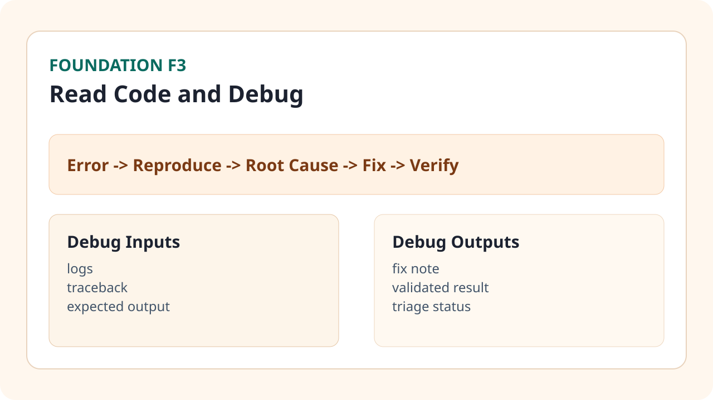

Business Situation

Concepts You Need
- File tree: biết file nào chứa logic chính, file nào chỉ là config.
- Trace function: theo dấu dòng dữ liệu đi qua các hàm.
- Error message: đọc đúng loại lỗi (syntax, type, key, network...).
- Reproduce steps: tái tạo lỗi ổn định trước khi sửa.
How Team Does This in Real Life
- Người phát hiện lỗi ghi rõ thời điểm, dữ liệu đầu vào, kết quả sai.
- Ops/engineer tái hiện lỗi trong môi trường local.
- AI pair hỗ trợ gợi ý patch tối thiểu và kiểm tra tác động phụ.
- Reviewer xác nhận fix và cập nhật runbook lỗi để tránh lặp lại.
Step-by-Step Workflow
- Chụp lại lỗi gốc và command đã chạy.
- Khoanh vùng file/hàm liên quan theo traceback hoặc log.
- Viết expected output để biết thế nào là fix đúng.
- Áp dụng patch nhỏ nhất có thể.
- Chạy lại test/input cũ để xác nhận lỗi biến mất.
- Log quyết định fix vào Bug Triage Sheet.
Mini Case + Numbers
| Lỗi | Thời gian xử lý trước | Thời gian xử lý sau (theo workflow) |
|---|---|---|
| Thiếu cột dữ liệu | 42 phút | 15 phút |
| Sai format ngày tháng | 35 phút | 12 phút |
| Lỗi chia cho 0 | 28 phút | 9 phút |
Kết luận: quy trình debug chuẩn + prompt rõ ràng giúp giảm đáng kể thời gian sửa lỗi và giảm patch sai.
Hands-on Task (45-90 phút)
- Lấy 3 lỗi beginner từ bộ bài tập và tái tạo từng lỗi.
- Điền đầy đủ cột trong Bug Triage Sheet: symptom, root cause, fix, verify.
- Fix ít nhất 2 lỗi và ghi bằng chứng output sau fix.
Artifact to Submit
- Bug Triage Sheet hoàn chỉnh cho 3 lỗi.
- Patch note ngắn cho từng lỗi đã sửa.
- Ảnh hoặc log xác minh trước/sau fix.
KPI / Completion Rubric
| Mức | Tiêu chí |
|---|---|
| Mức 0 | Chưa reproduce được lỗi. |
| Mức 1 | Reproduce được nhưng chưa khoanh vùng root cause. |
| Mức 2 | Fix được >= 2 lỗi beginner và verify đúng. |
| Mức 3 | Fix ổn định + có triage note rõ để team tái sử dụng. |
Common Failure Patterns
- Sửa nhiều nơi cùng lúc nên không biết fix nào hiệu quả.
- Không giữ input mẫu gây lỗi nên không verify được.
- Nhờ AI sửa nhưng không đưa log/context nên gợi ý sai hướng.
Prompt Pack
Build prompt: "Tạo checklist debug cho script xử lý dữ liệu marketing: reproduce -> isolate -> patch -> verify".
Debug prompt: "Đây là traceback, file liên quan và output kỳ vọng. Hãy đề xuất patch nhỏ nhất và giải thích vì sao đúng".
Review prompt: "Review patch này, nêu rủi ro regression và đề xuất test nhanh cần chạy".
Tooling Notes (IDE/CLI/tool pros-cons)
- Terminal logs: cho ngữ cảnh lỗi rõ, nhưng cần lưu lại để so sánh trước/sau.
- Search trong IDE: truy vết biến/hàm nhanh, nhưng dễ nhiễu nếu project chưa có naming nhất quán.
- Codex pair: mạnh khi có đầy đủ error context và expected behavior.
Optional Upgrade (low-code path)
- Thêm assert/check guard cho input trước khi xử lý.
- Viết test nhỏ cho 1 hàm quan trọng để tránh lỗi quay lại.
Đánh dấu tiến độ
Module này chưa hoàn thành
Đã hoàn thành Foundation 3